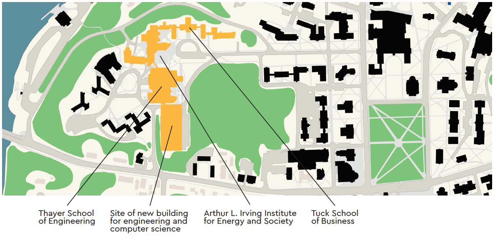

Growth.
The world needs more of the type of bold thinkers that Thayer School produces.
Expansion of our engineering program is a key component of President Philip Hanlon’s academic vision for all of Dartmouth. Through growth, we can provide open-ended experiential learning challenges for all Dartmouth students. And through growth, we can prepare even more students to produce solutions to tomorrow’s most vexing challenges.

“Our exciting vision ensures Dartmouth’s sustainable and long-lasting impact on the world,” says Thayer School Overseer Barry MacLean ’60 Th’61, who has donated $25 million—the largest gift in Thayer’s history—toward an additional engineering building and professorships.
At Dartmouth, our students gain a unique advantage by learning at the intersection of engineering and the liberal arts.
By studying the humanities, social sciences, and sciences, our engineering majors gain a critical understanding of the world they want to improve.
Similarly, all students today need a basic understanding of engineering in order to understand a world increasingly shaped by technology.
Thayer School has won the National Academy of Engineering top educational award: The Gordon Prize for Innovation in Engineering and Technology Education.
And Dartmouth students from all academic majors recognize the value of our approach as they clamor to get on wait lists to take our life-changing courses.
Thayer’s interdisciplinary, hands-on environment fuels innovation. Our entrepreneurial ecosystem ensures that ideas are in perpetual motion, from the germ of a notion in a student’s mind to the real-world application of a life-changing technology.
Thayer nurtures innovators like Anna Stork ’08, whose LuminAID rechargeable LED lanterns light the way on humanitarian missions and during disaster relief.
Thayer is where students invented the Mobile Virtual Player, a robotic football tackling dummy that is cutting the risk of concussions for NFL and high school players alike.
Thayer is where students learn alongside entrepreneurial luminaries such as Professor Tillman Gerngross, whose biotech startups are accelerating the discovery of new drugs, and Professor Eric Fossum, whose CMOS image sensor made possible the billions of cellphone cameras capturing images of our changing world.
Thayer's students, faculty, and alumni have founded more than 100 startups during the last decade.
Our collaborations with the Tuck School of Business, the Geisel School of Medicine, and Arts and Sciences allow Thayer School to produce not just engineers, but leaders and scholars.
Collaborators are most effective when they share space, both intellectual and physical. Running into one another in the hallway, seeing into a lab, overhearing discussions—the more encounters faculty and students experience, the greater the opportunity to develop new collaborations that people haven’t thought of yet.
Thayer School already shares space at Dartmouth-Hitchcock Medical Center— including the Center for Surgical Innovation, Advanced Imaging Center, and a lab suite in the Williamson Translational Research Building—so engineers can work with colleagues from Geisel School of Medicine to translate new technologies into applied diagnostics and therapies.
Thayer School’s vision for further expansion includes new connections on the West End of campus: Dartmouth’s Department of Computer Science will share space with Thayer in a new building linked to MacLean Engineering Sciences Center and Cummings Hall.
With overlapping work in robotics, imaging, medical research, and other areas of technological advances, computer science and engineering have a natural synergy that will spark new collaborations and innovations. And with the rise of the Internet of Things, engineering and computer science students and faculty will increasingly want to pool their skills and knowledge to turn great ideas into beneficial realities.
Add in the proximity of Tuck School of Business and Dartmouth’s new Arthur L Irving Institute for Energy and Society and the connections grow even more powerful.


14 Engineering Drive, Hanover, NH 03755
(603) 646-2230
thayer.receptionist@dartmouth.edu